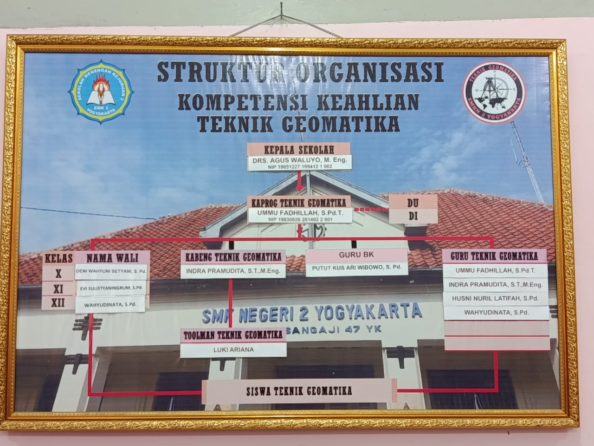

menjadi kompetensi keahlian yang unggul dan bermartabat dalam pengembangan pendidikan teknologi dan kejuruan, yang mampu menghasilkan teknisi dan non-teknisi bidang geomatika yang Profesional, Berkarakter dan Berlandaskan ketakwaan serta kemandirian.
MISI PROGRAM KEAHLIAN GEOMATIKA
Meningkatkan kompetensi di dunia geomatika,
Mengembangkan pelayanan sebagai Teknisi Teknik Geomatia,
Serta mengembangkan keilmuan Teknik Geomatika untuk studi lanjut
FASILITAS PENDUKUNG
Komputer dengan spesifikasi yang mendukung
Tersedianya Wi-Fi
Lab Surveying dengan AC
Kursi yang nyaman dan empuk
Proyektor.
PENGANTAR SURVEY PEMETAAN
DASAR-DASAR PERHITUNGAN SURVEY PEMETAAN
GAMBAR TEKNIK
SIMULASI DIGITAL
GAMBAR TEKNIK
SURVEYING
PENGINDERAAN JAUH
SISTEM INFORMASI GEOGRAFIS
SURVEYING
PENGINDERAAN JAUH
SISTEM INFORMASI GEOGRAFIS
Peluang karier lulusan Teknik Geomatika :
Surveyor di bidang konstruksi dan pertambangan
Spesialis Sistem Informasi Geografi (GIS)
Teknisi penginderaan jauh (Remote Sensing) dan pemetaan
Kartografer dan Pembuatan Peta Digital
Bekerja di Instansi Pemerintah seperti Bappeda, Kementerian ATR/BPN/BIG (Badan Informasi Geospasial)
Struktur Organisasi Jurusan
